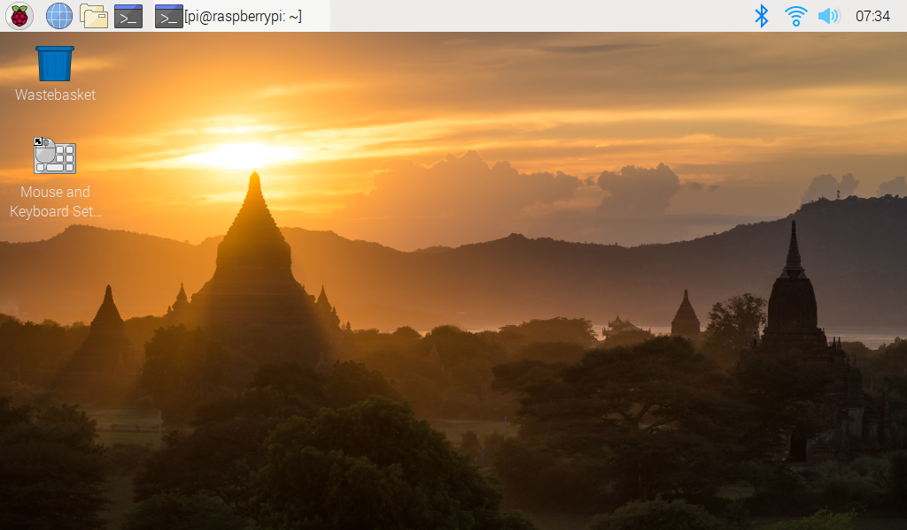

Nota
¡Hola! Bienvenido a la comunidad de entusiastas de SunFounder Raspberry Pi, Arduino y ESP32 en Facebook. Sumérgete más en el mundo de Raspberry Pi, Arduino y ESP32 con otros entusiastas.
¿Por qué unirte?
Soporte Experto: Resuelve problemas postventa y desafíos técnicos con la ayuda de nuestra comunidad y equipo.
Aprende y Comparte: Intercambia consejos y tutoriales para mejorar tus habilidades.
Preestrenos Exclusivos: Accede anticipadamente a anuncios de nuevos productos y adelantos.
Descuentos Especiales: Disfruta de descuentos exclusivos en nuestros productos más recientes.
Promociones y Sorteos Festivos: Participa en sorteos y promociones de temporada.
üëâ ¬øListo para explorar y crear con nosotros? Haz clic en [Aqu√≠] y únete hoy mismo!
Escritorio Remoto
Existen dos formas de controlar el escritorio de la Raspberry Pi de forma remota:
VNC y XRDP, puedes usar cualquiera de ellos.
VNC
Puedes usar la función de escritorio remoto a través de VNC.
Habilitar el servicio VNC
El servicio VNC ya está instalado en el sistema. Por defecto, VNC está deshabilitado. Necesitas habilitarlo en la configuración.
Paso 1
Introduce el siguiente comando:
sudo raspi-config

Paso 2
Elige 3 Interfacing Options presionando la tecla de flecha hacia abajo en tu teclado, luego presiona la tecla Enter.

Paso 3
Selecciona P3 VNC

Paso 4
Selecciona Yes -> OK -> Finish para salir de la configuración.

Iniciar sesión en VNC
Paso 1
Necesitas descargar e instalar el VNC Viewer en tu computadora personal. Después de la instalación, ábrelo.
Paso 2
Luego selecciona "New connection".

Paso 3
Introduce la dirección IP de la Raspberry Pi y cualquier Nombre.

Paso 4
Haz doble clic en la conexión que acabas de crear:

Paso 5
Introduce el Nombre de usuario (pi) y la Contraseña (raspberry por defecto).

Paso 6
Ahora puedes ver el escritorio de la Raspberry Pi:

Esto es el final de la parte de VNC.
XRDP
Otro método de escritorio remoto es XRDP, que proporciona un inicio de sesión gráfico a máquinas remotas utilizando RDP (Protocolo de Escritorio Remoto de Microsoft).
Instalar XRDP
Paso 1
Inicia sesión en la Raspberry Pi utilizando SSH.
Paso 2
Introduce las siguientes instrucciones para instalar XRDP.
sudo apt-get update
sudo apt-get install xrdp
Paso 3
A continuación, comienza la instalación.
Escribe "Y" y presiona la tecla "Enter" para confirmar.

Paso 4
Una vez finalizada la instalación, debes iniciar sesión en tu Raspberry Pi utilizando aplicaciones de escritorio remoto de Windows.
Iniciar sesión en XRDP
Paso 1
Si eres usuario de Windows, puedes utilizar la función de Escritorio Remoto que viene con Windows. Si eres usuario de Mac, puedes descargar y utilizar Microsoft Remote Desktop desde la APP Store, y no hay mucha diferencia entre los dos. El siguiente ejemplo es para escritorio remoto de Windows.
Paso 2
Escribe "mstsc" en Ejecutar (WIN+R) para abrir la Conexión a Escritorio Remoto e introduce la dirección IP de la Raspberry Pi, luego haz clic en "Connect".

Paso 3
A continuación, aparecerá la página de inicio de sesión de xrdp. Introduce tu nombre de usuario y contraseña. Después de eso, haz clic en "OK". La primera vez que inicies sesión, tu nombre de usuario es "pi" y la contraseña es "raspberry".

Paso 4
Aquí, has iniciado sesión exitosamente en la RPi utilizando el escritorio remoto.
Aviso de Derechos de Autor
Todos los contenidos, incluyendo pero no limitados a textos, imágenes y código en este manual, son propiedad de SunFounder Company. Debes usarlos solo para estudio personal, investigación, disfrute u otros propósitos no comerciales o sin fines de lucro, bajo las regulaciones y leyes de derechos de autor relacionadas, sin infringir los derechos legales del autor y titulares de derechos relevantes. Para cualquier individuo u organización que utilice estos contenidos para lucro comercial sin permiso, la Empresa se reserva el derecho de tomar acciones legales.